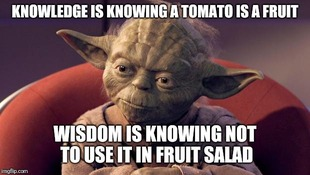

My name is Azkiya Tahreem. It is pronounced (As-key-ya). The meaning of my name is clever and mind full of wisdom.
I was homeschooled for about 5 years, which is all of middle school and the freshman year of high school.
I am a 3rd year transfer student at IIT, majoring in Information Technology & Management. I am also planning on doing the Co-Term in Cyber Forensics and Security.
Though I currently work part-time at Marshalls, I have been offered a summer internship at Northwestern Medicine! Although I had previously interned there, this time I was offered a position in the network security department.
I have volunteered numerous times in my local community, since a young age. From fundraising dinners to bonfire nights and any other events, I’ve helped plan and execute a lot of them. I must say, volunteering brought a lot of confidence within me and helped me develop leadership skills.
I love memes so here are a couple of them that describe me!
